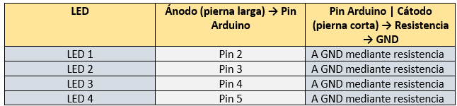

PASOS A SEGUIR
ACTIVIDAD EN TINKERCAD "LLUVIA DE MATRICES"

Objetivo: Aplicar la lógica de programación, el uso de arreglos (arrays) y el control de coordenadas tridimensionales (x, y, z) para crear animaciones en un cubo LED 4x4x4 utilizando Arduino.
PASO 1: Iniciar sesión en Tinkercad
- Ve a 👉 https://www.tinkercad.com
- Inicia sesión con tu cuenta (Google, correo, etc.)
PASO 2: Crear nuevo circuito - En el menú superior, haz clic en “Diseños†→ “Crear nuevo diseño”
- Selecciona “Circuito”
PASO 3: Agrega componentes
- Desde la barra derecha, arrastra los siguientes componentes al área de trabajo:
Â
PASO 4: Conectar LEDS a Arduino
- Conecta los LEDS y resistencias asÃ:

Tip: Los LEDS tienen polaridad. La pata larga va al pin digital (positivo), la corta al negativo (resistencia a GND).
PASO 5: Agrega el código en Arduino
- Haz clic en la pestaña “Código†(arriba a la derecha)
- cambia de “Bloques†a “Texto”
Borra todo lo que hay y pega este código:
Código:
int Columnas[] = {0, 1, 2, 3, 4, 5, 6, 7, 8, 9, 10, 11, 12, 13, 14, 15};
int Filas[] = {16, 17, 18, 19};
// Configuración inicial
void setup() {
 for (int i = 0; i < 16; i++) {
  pinMode(Columnas[i], OUTPUT);
  digitalWrite(Columnas[i], LOW);
 }
 for (int i = 0; i < 4; i++) {
  pinMode(Filas[i], OUTPUT);
  digitalWrite(Filas[i], LOW);
 }
}
// Encender LED en coordenadas (x, y, z)
void encenderLED(int x, int y, int z, int tiempo) {
 int col = y * 4 + x; // Conversión (x, y) a Ãndice de columna
 digitalWrite(Columnas[col], HIGH);
 digitalWrite(Filas[z], HIGH);
 delay(tiempo);
 digitalWrite(Columnas[col], LOW);
 digitalWrite(Filas[z], LOW);
}
// Apagar todo
void apagarTodo() {
 for (int i = 0; i < 16; i++) digitalWrite(Columnas[i], LOW);
 for (int i = 0; i < 4; i++) digitalWrite(Filas[i], LOW);
}
// Figura: cubo que crece
void cuboLatente() {
 for (int r = 0; r < 2; r++) {
  for (int i = 0; i < 40; i++) {
   encenderLED(1, 1, 1, 2);
  }
  for (int i = 0; i < 40; i++) {
   encenderLED(1, 1, 1, 1);
   encenderLED(2, 1, 1, 1);
   encenderLED(1, 2, 1, 1);
   encenderLED(1, 1, 2, 1);
   encenderLED(2, 2, 1, 1);
   encenderLED(2, 1, 2, 1);
   encenderLED(1, 2, 2, 1);
   encenderLED(2, 2, 2, 1);
  }
 }
}
// Figura: lluvia descendente
void lluviaVertical() {
 for (int ciclo = 0; ciclo < 40; ciclo++) {
  int x = random(0, 4);
  int y = random(0, 4);
  for (int z = 3; z >= 0; z--) {
   encenderLED(x, y, z, 40);
  }
  delay(50);
 }
}
// Figura: cubo parpadeante
void parpadeoCubo() {
 for (int r = 0; r < 2; r++) {
  for (int z = 0; z < 4; z++) {
   for (int y = 0; y < 4; y++) {
    for (int x = 0; x < 4; x++) {
     encenderLED(x, y, z, 1);
    }
   }
  }
  delay(200);
  apagarTodo();
  delay(200);
 }
}
// LOOP PRINCIPAL
void loop() {
 Â
 parpadeoCubo();
Â
 Â
 lluviaVertical(); // Lluvia agregada como animación final
}
Infórmate:Â
- int Columnas[] = {0, 1, 2, 3, 4, 5, 6, 7, 8, 9, 10, 11, 12, 13, 14, 15}: Crea un arreglo con los 16 pines que representan las columnas de un cubo LED 4x4x4 (4 columnas × 4 filas = 16 LEDS por nivel).
- void setup: Esta es la función de configuración. Se ejecuta una sola vez al iniciar el programa en el Arduino.
- void encenderLED: Esta función enciende un solo LED en una posición (x, y, z) durante un tiempo especÃfico.
- int col: Convierte las coordenadas 2D (x, y) en una posición del arreglo de columnas (porque es 1D).
- pinMode(OUTPUT):  indica que cada uno de esos pines será usado como salida, es decir, enviarán energÃa para encender los LEDS.
- void loop: se ejecuta en ciclo infinito, es decir, una y otra vez. Todo lo que pongas aquà se repite mientras esté corriendo la simulación.
- for- high:Enciende el LED en esa posición, espera el tiempo dado, y lo apaga.
- for-low: Apaga todas las columnas y filas del cubo.
- loop: Esta función se repite constantemente: Ejecuta el parpadeo total del cubo, luego muestra la lluvia descendente.
- void apagarTodo:Â Apaga todas las columnas y filas del cubo.
- void cuboLatente: Esta animación muestra un cubo que va creciendo (efecto de encender más LEDs con el tiempo).
- for: repite la animación un sinnúmero se veces.
- void lluviaVertical:Â 40 ciclos de "gotas de lluvia". Cada gota cae desde arriba hasta abajo.
- delay: Pausa 200ms, apaga el cubo, espera 200ms más. Da un efecto de parpadeo total.